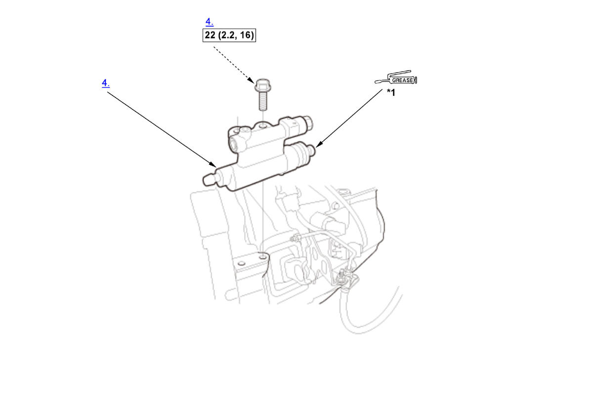

Removal and Installation: Procedure
WARNING: This page is about a different variant/trim than selected.
NOTE:
Numbered call-outs in figure pertain to list numbers in following procedure.


 Courtesy of HONDA, U.S.A., INC.
Courtesy of HONDA, U.S.A., INC. |
Torque: N.m (kgf.m, lbf.ft) |
|
Super high temp urea grease (P/N 08798-9002) |
| *1 | 0.4-1.0 g (0.014-0.035 oz) |
- Clutch Hose and Line - Disconnect
- Intake Air Duct E - Remove (1.5L Engine)
- Intake Air Duct F - Remove (1.5L Engine)
- Slave Cylinder - Remove
- All Removed Parts - Install
1. Install the parts in the reverse order of removal. - Clutch Hydraulic System - Bleed
1. Bleed the clutch hydraulic system .
2. Check the clutch operation and check for leaking fluid. - Test Drive - Check